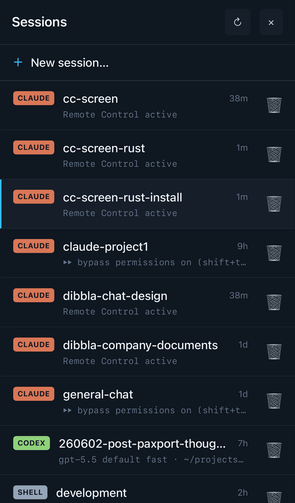

What is cc-screen?
cc-screen keeps a team of AI coding agents — Claude Code, Codex, Gemini, Kimi — working around the clock on your own computers, and lets you check in on any of them from a phone, a browser, or a terminal.
Four words carry the whole model:
- Machines are your computers — a laptop, a home server, a cloud box. Each one runs a small background process (the cc-screen agent) that you install with one command.
- Sessions are real terminal sessions the agent owns on that machine. A
session runs one coding CLI (
claude,codex,gemini,kimi, or a plain shell) in a real PTY, so it keeps running whether or not you're watching. - Assistants are the coding CLIs themselves. cc-screen doesn't replace them — it launches, supervises, and reconnects them.
- The hub at app.ccscreen.dev is one address in front of all your machines. Each machine dials out to the hub and registers; you sign in once and see every machine's sessions in one list.
phone / browser / ccs the hub your machines
───────────────────── ─────── ─────────────
│ │ ┌─ agent (laptop) ── claude, codex …
│ one URL (app.ccscreen.dev) │ ◀── dials out ──────┤
└───────────────────────────────────►│ ◀── dials out ──────┼─ agent (server) ── gemini …
│ ◀── dials out ──────┤
relays each request │ └─ agent (pi) ────── kimi …
to the owning machine
The hub owns no terminals and no files — it's a registry and a relay. Your code, your sessions, and your CLI logins stay on your machines; the hub passes bytes between your browser and the machine that owns them. (More in Security model.)

What it feels like
- Start a Claude Code session on your desktop from the bus, watch it work, and answer its questions from your phone.
- Keep four agents busy in a multi-pane grid on a laptop, each pane a live terminal on a different machine.
- Open the built-in file browser and editor to review what an agent just wrote — markdown preview included — without SSH.
- Get a push notification when an agent finishes its turn.
Two ways in
- The web app — a PWA served by the hub. Works in any browser; add it to your phone's home screen for the app experience. See Using the web app.
ccs— a native terminal client with a session switcher and a multi-pane grid, for when you live in a terminal anyway. See The ccs terminal client.
Where to go next
- Quickstart — signup to your first live session in about five minutes.
- Self-hosting — everything the hosted hub does, you can run yourself. Fully supported.